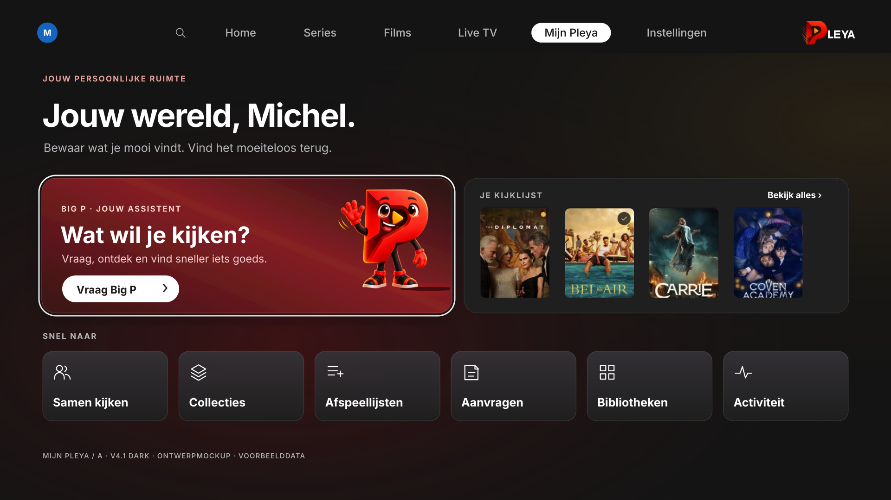
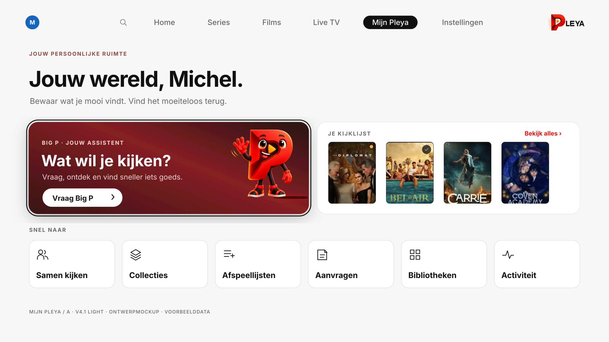
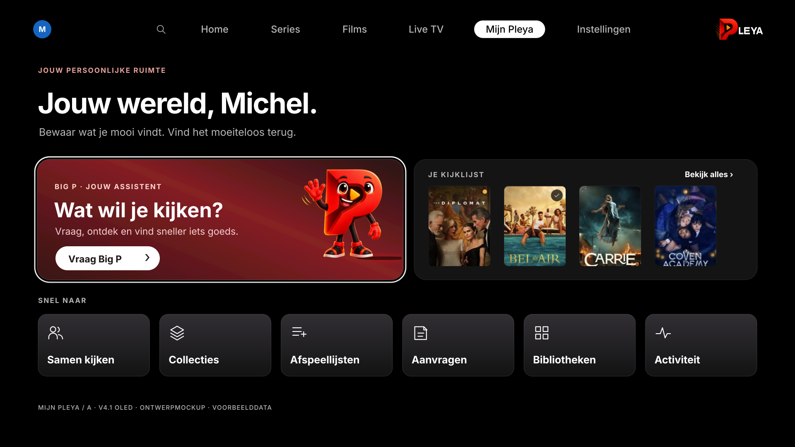
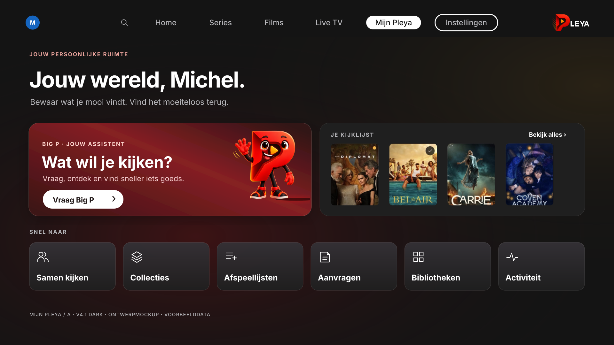
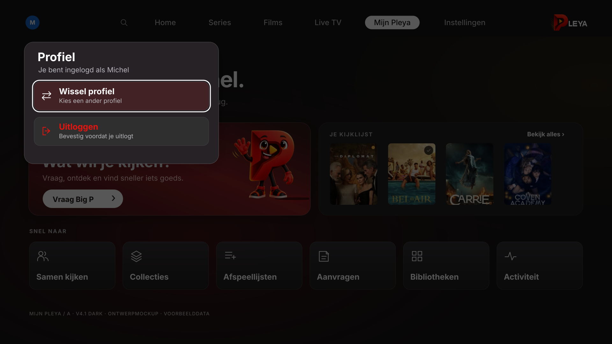
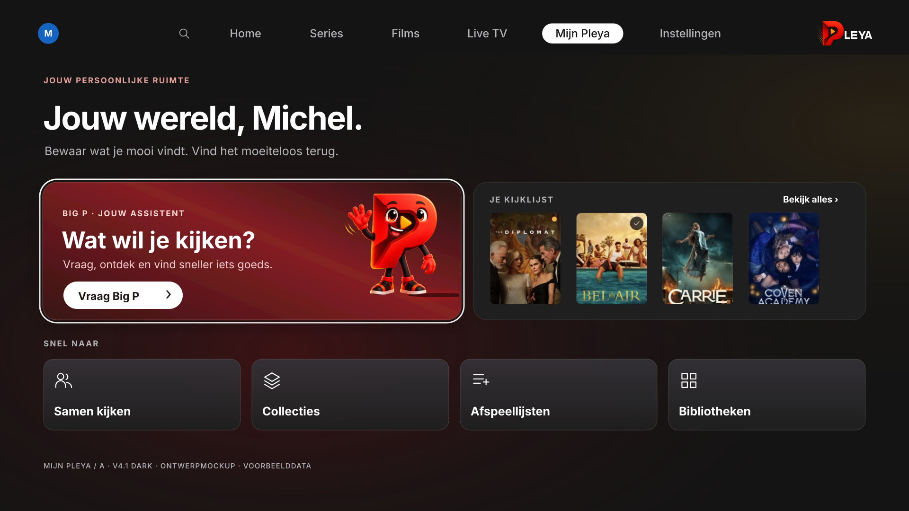
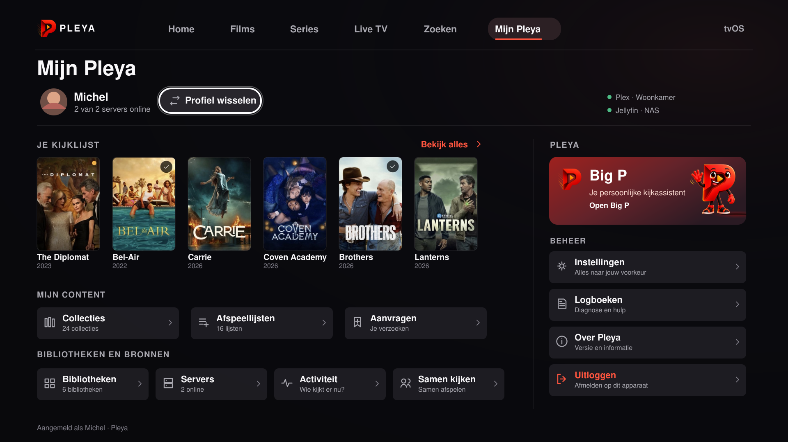
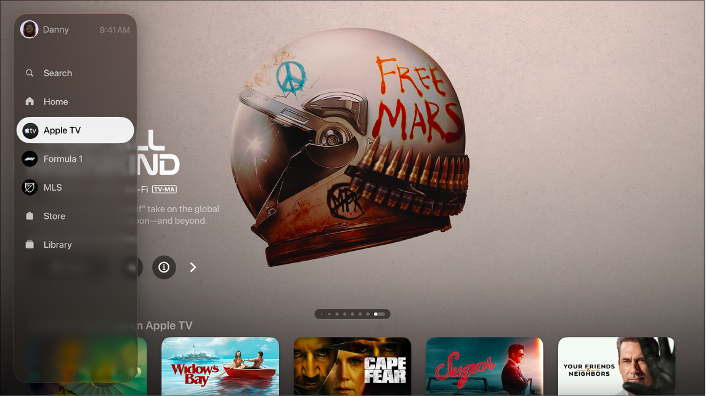

PLEYA · MIJN PLEYA OP TVOS · A V4.1
Jouw kijkomgeving. Helder gescheiden.
Gecorrigeerde bestaande navbar: profiel links, zoekicoon, Home, Series, Films, Live TV, Mijn Pleya en het Pleya-woordmerk rechts. Alleen Instellingen wordt na Mijn Pleya toegevoegd. Geen tweede accountblok, geen Beheer-pagina, geen algemeen Meer-paneel en geen dubbele kijklijst. Ontwerpmockups, geen gewijzigde Pleya-build. Tik op een beeld om het originele bestand te openen.
Dark — hoofdontwerp

Light


OLED


Instellingen met focus


Profiel: twee duidelijke acties


Zonder Aanvragen en Activiteit

Vergelijkingsmateriaal



